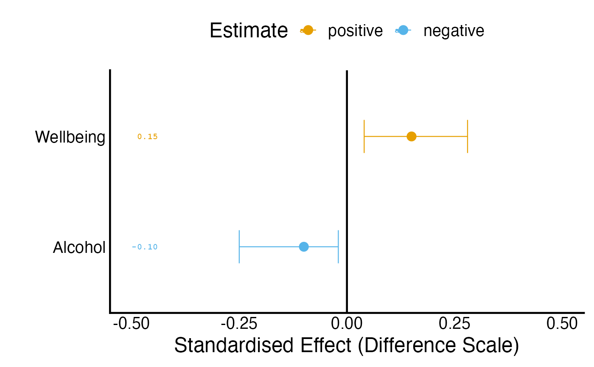

Average-effect reporting and outcome scales
Source:vignettes/ate-reporting-scales.Rmd
ate-reporting-scales.Rmdmargot_plot_ate(), margot_table_ate() and
margot_interpret_ate() produce a figure, a numerical table
and prose from the same reporting calculation.
margot_plot() remains available and returns all three as
plot, transformed_table and
interpretation. The example below uses invented estimates
and sensitivity quantities; it fits no model and uses no participant
data.
estimates <- data.frame(
outcome = c("wellbeing_z", "alcohol_z"),
ATE = c(0.15, -0.10),
E_Value = c(1.8, 1.6),
E_Val_bound = c(1.3, 1.2)
)
estimates[["2.5 %"]] <- c(0.04, -0.25)
estimates[["97.5 %"]] <- c(0.28, -0.02)
scales <- data.frame(
outcome = c("wellbeing_z", "alcohol_z"),
transformation = "identity",
center = c(4, 3), scale = c(1.2, 2), orientation = 1,
unit = c("points", "drinks"), unit_multiplier = 1
)
margot_plot_ate(estimates, scale_info = scales, e_val_bound_threshold = 1)
#> ℹ no multiplicity adjustment applied
#> ℹ Transformed label: wellbeing_z -> Wellbeing
#> ℹ Transformed label: alcohol_z -> Alcohol
#> Loading required package: dplyr
#>
#> Attaching package: 'dplyr'
#> The following objects are masked from 'package:stats':
#>
#> filter, lag
#> The following objects are masked from 'package:base':
#>
#> intersect, setdiff, setequal, union
margot_table_ate(estimates, scale_info = scales, e_val_bound_threshold = 1)
#> ℹ no multiplicity adjustment applied
#> ℹ Transformed label: wellbeing_z -> Wellbeing
#> ℹ Transformed label: alcohol_z -> Alcohol
#> ATE 2.5 % 97.5 % confidence_level E_Value E_Val_bound
#> Wellbeing 0.15 0.04 0.28 0.95 1.8 1.3
#> Alcohol -0.10 -0.25 -0.02 0.95 1.6 1.2
#> reported_estimate reported_lower reported_upper reporting_quantity
#> Wellbeing 0.18 0.048 0.336 mean_difference
#> Alcohol -0.20 -0.500 -0.040 mean_difference
#> reporting_unit
#> Wellbeing points
#> Alcohol drinks
cat(margot_interpret_ate(estimates, scale_info = scales, e_val_bound_threshold = 1))
#> ℹ no multiplicity adjustment applied
#> ℹ Transformed label: wellbeing_z -> Wellbeing
#> ℹ Transformed label: alcohol_z -> Alcohol
#> Confidence intervals were reported as 95% CI. No adjustment was made for family‑wise error rates to E‑values.
#>
#> The following estimates of average treatment effects meet the specified reporting threshold (E‑value lower bound >= 1):
#>
#> - Wellbeing: 0.150 (95% CI: 0.040 to 0.280); on the original scale, mean difference = 0.180 points (95% CI: 0.048 to 0.336). E-value bound = 1.30
#> - Alcohol: -0.100 (95% CI: -0.250 to -0.020); on the original scale, mean difference = -0.200 drinks (95% CI: -0.500 to -0.040). E-value bound = 1.20The graph retains the supplied model-scale estimates and intervals.
The table retains those numbers and adds reported_estimate,
reported_lower, reported_upper,
reporting_quantity and reporting_unit. Its
confidence_level column preserves each interval’s supplied
coverage. Prose reports the supported conversion alongside the
model-scale estimate. The E-value threshold controls which estimates
enter the prose; it does not establish identification or remove the need
to report other planned outcomes. E-values remain tied to their supplied
scientific scale and calculation, not to a change of display units.
Record preparation constants
Let Y denote the measured outcome and g its
declared transformation. Metadata describes the model outcome as
orientation * (g(Y) - center) / scale. Each row of
scale_info matches an original outcome key before display
labels change. Store the constants from preparation rather than
recomputing them from a reporting subset.
| Field | Meaning | Default |
|---|---|---|
outcome |
Original outcome key in the estimate table | Required |
transformation |
identity, log, or log1p
|
identity |
center |
Centre subtracted during preparation | 0 |
scale |
Positive divisor used during preparation | 1 |
orientation |
Outcome orientation, 1 or -1 | 1 |
unit |
Unit label for the reported affine difference | Empty |
unit_multiplier |
Positive affine unit conversion, such as 60 for hours to minutes | 1 |
For an affine mean difference, the centre cancels. The estimate and
both supplied confidence limits are multiplied by
orientation * scale * unit_multiplier; reversed limits are
reordered. This preserves asymmetric intervals and numerical precision.
Display functions may round printed numbers, but the numerical table
retains their precision. A ratio of centred outcomes cannot generally be
converted to an original-scale ratio from that contrast alone;
unsupported ratio conversions fail explicitly.
The applied NZAVS convention uses unlogged values before standardisation
For the New Zealand Attitudes and Values Study (NZAVS), the current
applied preparation convention keeps continuous baseline and lagged
adjustment variables on their unlogged scientific scales before
z-standardisation. Exposure columns used to define an intervention
retain the registered exposure scale. Terminal outcomes also remain
unlogged: the exercise outcome is hours_exercise, measured
in hours per week. Scoring and orientation remain explicit measurement
decisions; omitting a logarithm does not remove those decisions.
For each terminal outcome, preparation records the unweighted mean and sample standard deviation among that outcome’s primary estimation rows. It applies those constants once and retains them across primary fits, sensitivity analyses, groups, policy folds, and reports. This is the same standardisation convention used by the developing GRF workflow. The reference rows and their missing-data rule belong in the preparation record. An unweighted standardisation reference does not replace the analysis weights used to estimate a target-population contrast. Baseline and lagged adjustment variables retain their own preparation constants, separately from terminal-outcome constants.
The following example uses three invented primary-row exercise values and an invented estimated contrast, interval, and E-values. It fits no model. The saved mean is 2 hours per week, and the sample standard deviation is 2 hours per week.
primary_hours_exercise <- c(0, 2, 4)
exercise_center <- mean(primary_hours_exercise)
exercise_scale <- sd(primary_hours_exercise)
exercise_z <- (primary_hours_exercise - exercise_center) / exercise_scale
exercise_estimate <- data.frame(
outcome = "hours_exercise_z",
ATE = 0.25,
`2.5 %` = 0.10,
`97.5 %` = 0.40,
confidence_level = 0.95,
E_Value = 1.8,
E_Val_bound = 1.4,
check.names = FALSE
)
exercise_scale_info <- data.frame(
outcome = "hours_exercise_z",
transformation = "identity",
center = exercise_center,
scale = exercise_scale,
orientation = 1,
unit = "hours per week",
unit_multiplier = 1
)
exercise_table <- margot_table_ate(
exercise_estimate,
scale_info = exercise_scale_info,
e_val_bound_threshold = 1
)
#> ℹ no multiplicity adjustment applied
#> ℹ Transformed label: hours_exercise_z -> Hours Exercise
exercise_table[, c("ATE", "reported_estimate", "reported_lower", "reported_upper")]
#> ATE reported_estimate reported_lower reported_upper
#> Hours Exercise 0.25 0.5 0.2 0.8
cat(margot_interpret_ate(
exercise_estimate,
scale_info = exercise_scale_info,
label_mapping = list(hours_exercise_z = "Weekly exercise"),
e_val_bound_threshold = 1
))
#> ℹ no multiplicity adjustment applied
#> ℹ Mapped label (exact): hours_exercise_z -> Weekly exercise
#> The following estimates of average treatment effects meet the specified reporting threshold (E‑value lower bound >= 1):
#>
#> - Weekly exercise: 0.250 (95% CI: 0.100 to 0.400); on the original scale, mean difference = 0.500 hours per week (95% CI: 0.200 to 0.800). E-value bound = 1.40The contrast of 0.25 standard deviations corresponds to 0.5 hours per week, with the supplied 95% interval transformed to 0.2–0.8 hours per week. The mean cancels from the difference. These are two scales for the same affine mean contrast; the original-unit companion is not a new fit.
Logarithms remain available for other outcome definitions
The applied NZAVS convention above does not remove Margot’s general-purpose logarithmic reporting. Historical analyses retain their specifications, and another scientific question may explicitly define a logged outcome. The reported quantity must match that definition.
Exponentiating a difference of mean log outcomes gives a ratio of
geometric means. With log1p, it gives a ratio of geometric
means of Y + 1. Neither quantity is generally an arithmetic
mean difference or an arithmetic mean ratio. A transformed contrast
cannot recover a missing arithmetic-mean causal estimand merely by
substituting a reference mean.
control <- c(0, 3)
policy <- c(1, 7)
log_difference <- mean(log1p(policy)) - mean(log1p(control))
c(shifted_geometric_mean_ratio = exp(log_difference),
arithmetic_mean_difference = mean(policy) - mean(control))
#> shifted_geometric_mean_ratio arithmetic_mean_difference
#> 2.0 2.5The shifted geometric ratio is 2, whereas the arithmetic mean
difference is 2.5. These are different scientific quantities. Nonlinear
reported values therefore receive explicit geometric-ratio labels, and
legacy arithmetic _original columns remain missing. Do not
pass the displayed geometric ratio to a risk-ratio E-value formula.
Existing calls
Calls to margot_plot() retain the combined list,
argument precedence and saving behaviour. The three focused interfaces
select their respective component; save_output = TRUE still
saves the complete list. Existing original_df calls infer
transformations from outcome suffixes and matching unstandardised source
columns, with a warning that scale constants may be recomputed. Legacy
log names mean log1p; explicit scale_info
distinguishes ordinary logarithms. Missing or ambiguous source columns
require explicit metadata. No reporting path should substitute an
invented population mean.
When regenerating an existing study report, retain its estimation-version record and separately record the reporting version and corrected quantities. Reporting corrections do not imply that an earlier study was estimated with a later package release.